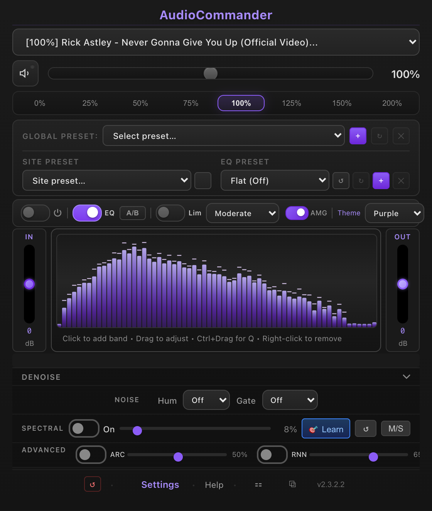
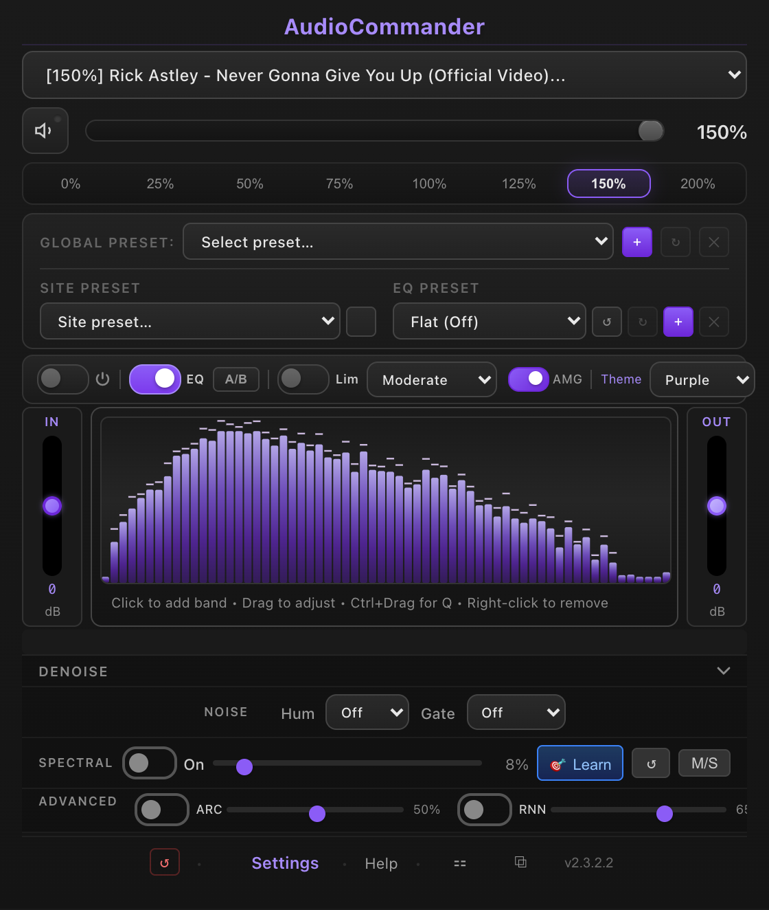
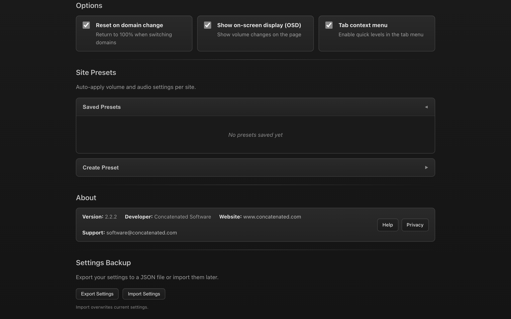
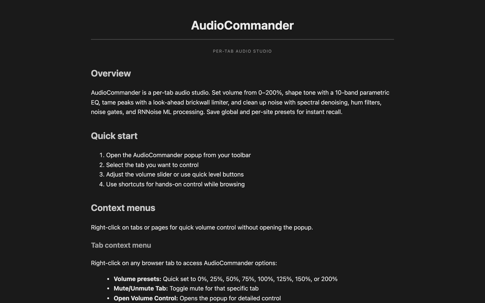

Per-tab volume, a real 10-band EQ, dynamics, and noise reduction — right in your browser.
Boost quiet tabs to 200%, shape tone with a parametric equalizer, tame peaks with a limiter, and clean up noise — all processed locally, with zero tracking.

Studio-style audio tools for everyday browsing — no external apps, no accounts.
Independent volume from 5% to 200% per tab, with scroll-wheel control and global mute.
Adjustable frequency, gain, and Q per band, with built-in and custom presets and a live spectrum.
A look-ahead brickwall limiter with auto makeup gain keeps loudness consistent and clip-free.
RNNoise + a spectral denoiser, an adjustable gate, and 50/60 Hz hum filtering.
Input/output VU meters and a spectrum analyzer so you can see exactly what you're shaping.
Save per-domain settings that auto-apply when you return to a site.
Fully customizable shortcuts for volume, mute, and reset.
No data collection, no analytics, no tracking. Everything runs locally in your browser.
Live spectrum, parametric EQ, dynamics, and cleanup — in one compact popup.


